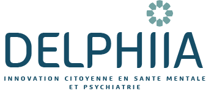

The initiative
Pediatric mental health conditions represent a growing challenge worldwide. The fragmentation of data systems and limited longitudinal datasets restrict the ability to understand care trajectories and psychological outcomes. Non-pharmacological interventions such as art therapy are widely implemented, yet their measurable impact is rarely quantified with integrated longitudinal datasets. Since July 2024, the POSITIVE project has enrolled 1,200+ children (300+ in chronic care units) and recorded 6,500+ documented interactions across partner hospitals in Lebanon, creating a unique opportunity to build a research-grade Observatory.
The POSITIVE project Observatory and Multidisciplinary Scientific Advisory Committee form a unified strategic initiative to transform multidisciplinary pediatric mental health data into an interoperable data intelligence platform. The Observatory combines psycho-social indicators, medico-social context, and arts therapies outcomes to produce longitudinal insights into the emotional well-being of hospitalized children, adolescents and young adults.
The initiative serves four strategic objectives: (1) strengthen the scientific foundation through high-quality research; (2) deliver evidence-based insights to strengthen awareness, prevention strategies, early diagnosis, and facilitate recovery; (3) support institutional decision-making in pediatric mental health care; (4) build sustainable funding through research insights to sustain the POSITIVE project NGO and offer the program to more institutions.
Objectives
Observatory objectives
- Provide independent scientific advice to institutions
- Collect harmonized psycho-social datasets
- Monitor patient outcomes longitudinally
- Facilitate multicenter research collaborations
- Foster transdisciplinary research across clinical, academic & social domains
Multidisciplinary Scientific Advisory Committee objectives
- Evaluate psychosocial interventions incl. arts-based therapies
- Identify emerging trends in pediatric mental health
- Strengthen the science-policy interface
- Promote responsible & sustainable innovation
- Bring transdisciplinary collaborations across sectors
A global approach: 4 pillars
Human · Data · Science · Sustainability
Our model rests on four pillars. In other words: moving from intuition to demonstrated results.
- Human
- At the heart of everything: young patients, their families and their care teams, on site.
- Data
- A data system we enrich, session after session, and that feeds science.
- Science
- Applied research, with the written opinion of our Multidisciplinary Scientific Advisory Committee.
- Sustainability
- Data & Science are supporting the NGO’s sustainability, helping strengthen mental health care on site and allowing us to offer the program to more hospitals and care centers.
For us, prevention is not a cost: it is an investment.
Multidisciplinary Scientific Advisory Committee
Alongside the Observatory, the Committee brings together experts in medicine, neuroscience, clinical psychology and pediatrics, patient representatives and art therapists.
Its role: to guarantee methodological rigor and ethics, with a written opinion before any dissemination.
Recognized in Europe
On 31 March 2026, at the Grand Palais in Paris, the DELPHIIA–ChangeNOW action group on patient engagement in mental health selected the POSITIVE project, among other European actors, as a flagship example.
The Policy Brief addressed to the European Commission puts it this way: “If Beirut can do this under fire, no European health system has an excuse for late-stage, tokenistic consultation.” The regulations and advances it recommends, we already apply.
The recognition is European. The evidence is produced here, in Lebanon.

Data protection
Data protectionGDPRFAIR principlesHDS-certified hosting in the European Union

Take Action for Children in Hospitals & Care Centers
More engaged young patients today are healthier, more autonomous and more engaged adults tomorrow.